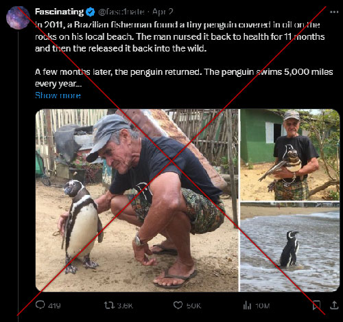
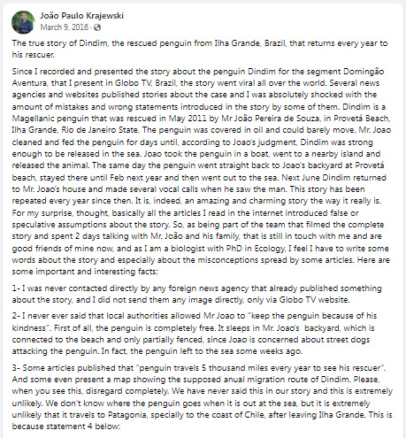

Fact Check | Penguin travels 5 thousand miles every year to see his rescuer
Fact-check article date: April 4, 2024 | Updated: April 4, 2024Fact-check by ANDRE M. CHANG
Claim reviewed: "The penguin swims 5,000 miles every year to spend time with the fisherman."
Claim date: April 2, 2024

Rating: 2
Mostly false1="False", 2="Mostly false", 3="Half true", 4="Mostly true", 5="True"
Fact:
Screenshot taken on April 5, 2024, from João Paulo Krajewski's Facebook account.
Krajewski, the biologist who documented the story of "Dindim penguin" for Brazil's Globo TV, posted a statement on March 9, 2016:
Krajewski, the biologist who documented the story of "Dindim penguin" for Brazil's Globo TV, posted a statement on March 9, 2016:
"3- Some articles published that 'penguin travels 5 thousand miles every year to see his rescuer.'" "Please, when you see this, disregard completely. We have never said this in our story and this is extremely unlikely. We don't know where the penguin goes when it is out at the sea, but it is extremely unlikely that it travels to Patagonia, specially to the coast of Chile, after leaving Ilha Grande."
References:
• "Facebook." www.facebook.com, www.facebook.com/joaopaulo.krajewski/posts/1008600529225514. Accessed April 5, 2024.
• "Domingão Do Faustão | 'Domingão Aventura' Mostra Amizade de Pinguim Com Morador de Ilha | Globoplay." Globoplay.globo.com, globoplay.globo.com/v/4864050/. Accessed April 5, 2024.
• "Facebook." www.facebook.com, www.facebook.com/joaopaulo.krajewski/posts/1008600529225514. Accessed April 5, 2024.
• "Domingão Do Faustão | 'Domingão Aventura' Mostra Amizade de Pinguim Com Morador de Ilha | Globoplay." Globoplay.globo.com, globoplay.globo.com/v/4864050/. Accessed April 5, 2024.